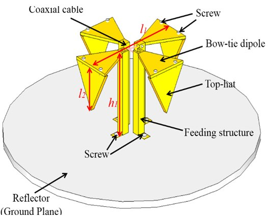

연구실적 · 국내전문학술지
Equivalent Model Analysis of Modified Satellite Antenna for Isoflux Pattern Generation
Equivalent Model Analysis of Modified Satellite Antenna for Isoflux Pattern Generation

초록
This paper presents a theoretical approach for a modified turnstile antenna suitable for satellite communication in order to investigate the current distributions of radiators and radiation characteristics with equivalent model analysis. The proposed equivalent model is composed of an ideally horizontal dipole antenna and vertically loaded top-hat radiating elements. The required isoflux pattern with wide beamwidth has been achieved by attaching top-hat elements to the main radiators. In addition to illustrating radiation patterns, electrical performances like current distributions have been analyzed by mathematically manipulating the equations derived from the equivalent horizontal and vertical dipole model.
인용
Eun-Cheol Choi (최은철), Jae Wook Lee (이재욱), Taek-Kyung Lee (이택경), Woo-Kyung Lee (이우경), “Equivalent Model Analysis of Modified Satellite Antenna for Isoflux Pattern Generation”, 한국전자파학회 JEES (Journal of Electromagnetic Engineering and Science), 제14권 3호, 2014년
BibTeX
@article{Choi_2014,
title={Equivalent Model Analysis of Modified Satellite Antenna for Isoflux Pattern Generation},
volume={14},
ISSN={2234-8409},
url={http://dx.doi.org/10.5515/jkiees.2014.14.3.278},
DOI={10.5515/jkiees.2014.14.3.278},
number={3},
journal={Journal of electromagnetic engineering and science},
publisher={Korean Institute of Electromagnetic Engineering and Science},
author={Choi, Eun-Cheol and Lee, Jae Wook and Lee, Taek-Kyung and Lee, Woo-Kyung},
year={2014},
month=Sept,
pages={278–283}
}